Documents professionnels
Certificats & attestations
Santé au travail, santé publique, EHS, sécurité, urgences sanitaires et gestion de projets.
Médecine & santé au travail
Diplômes et certificats professionnels
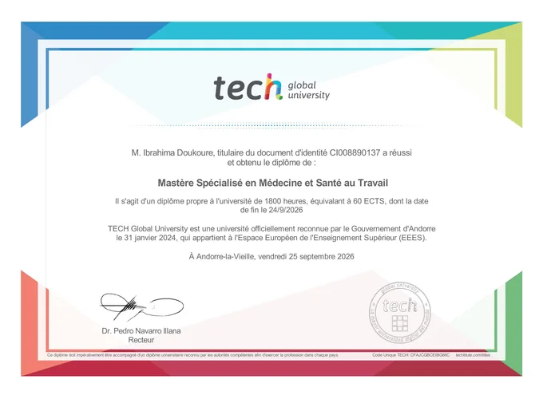
Mastère Spécialisé en Médecine et Santé au Travail
TECH Global University · 2026
Voir le document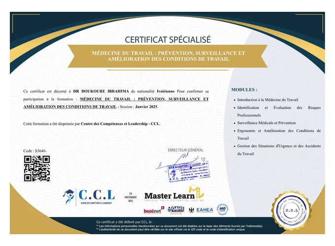
Médecine du Travail : Prévention, Surveillance et Amélioration des Conditions de Travail
Centre des Compétences et Leadership · 2025
Voir le document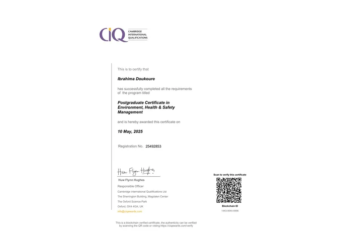
Postgraduate Certificate in Environment, Health & Safety Management
Cambridge International Qualifications · 2025
Voir le document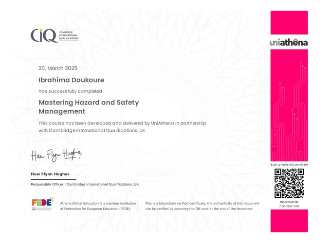
Mastering Hazard and Safety Management
Cambridge International Qualifications / UniAthena · 2025
Voir le documentPrévention & sécurité
Risques professionnels, sécurité et conformité
Professionnel de la gestion des risques de sécurité · Niveau régional
INSSA · 2026
Voir le document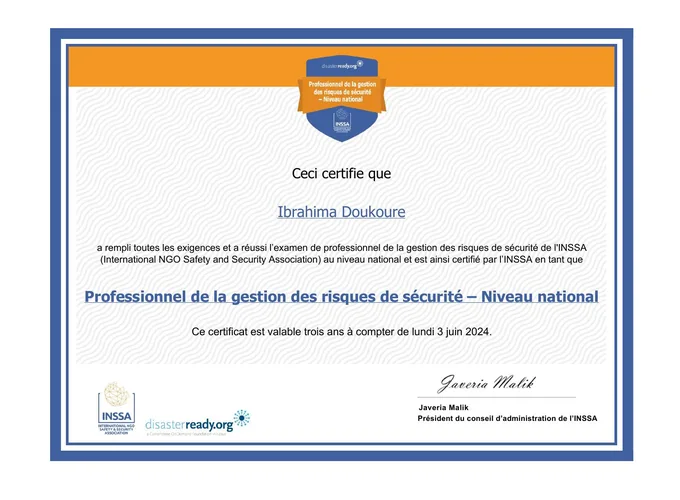
Professionnel de la gestion des risques de sécurité · Niveau national
INSSA · 2024
Voir le documentISO 45001:2018 · Exigences Santé et Sécurité au Travail
Udemy · 2025
Voir le document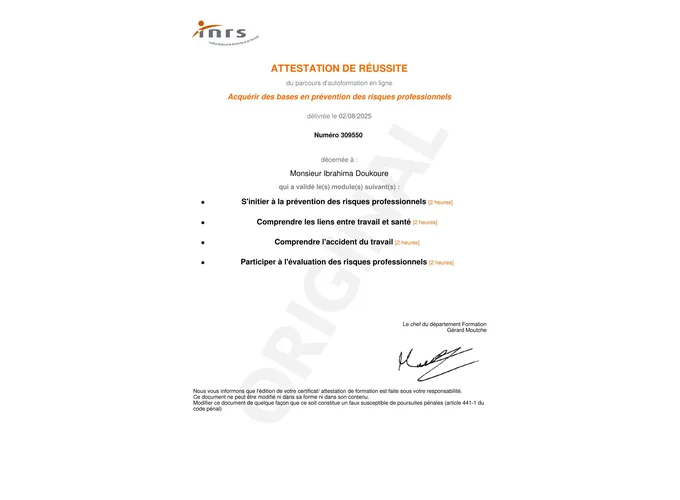
Acquérir des bases en prévention des risques professionnels
INRS
Voir le document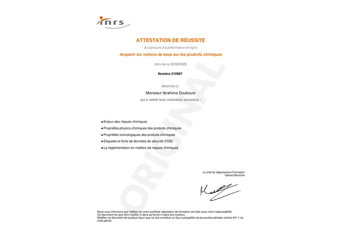
Notions de base sur les produits chimiques
INRS
Voir le document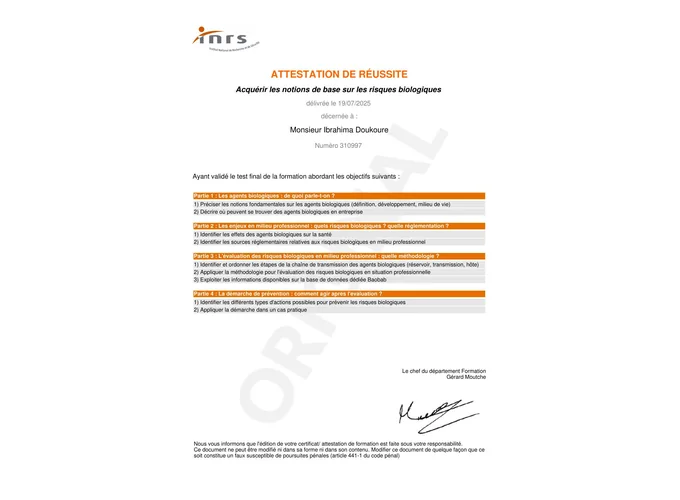
Notions de base sur les risques biologiques
INRS
Voir le documentSanté publique
Épidémiologie, systèmes de santé & urgences sanitaires
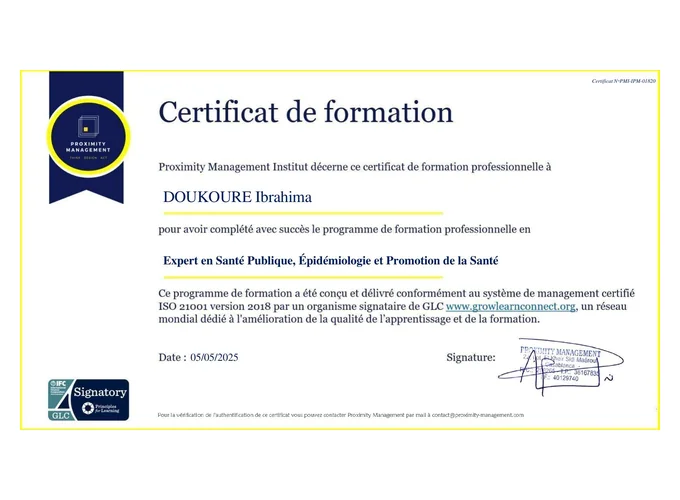
Expert en Santé Publique, Épidémiologie et Promotion de la Santé
Institut Polytechnique de Marrakech · 2025
Voir le documentSystems Thinking in Public Health
Johns Hopkins University · 2025
Voir le document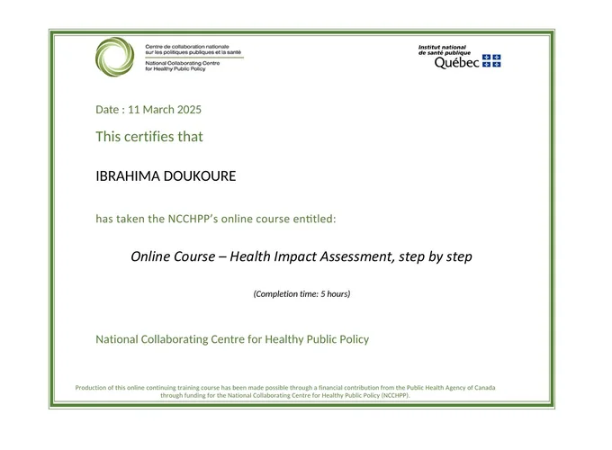
Évaluation de l’impact sur la santé, étape par étape
INSPQ Québec · 2025
Voir le document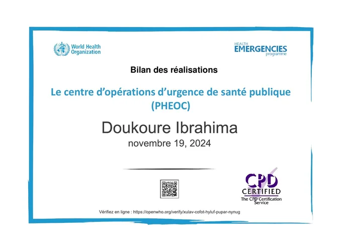
Centre d’opérations d’urgence de santé publique (PHEOC)
OMS / OpenWHO · 2024
Voir le document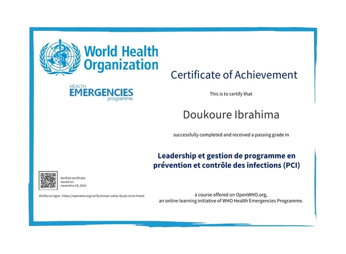
Leadership et gestion de programme en prévention et contrôle des infections
OMS / OpenWHO · 2024
Voir le document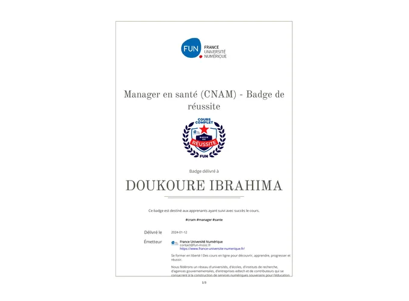
Manager en santé
France Université Numérique · 2024
Voir le document